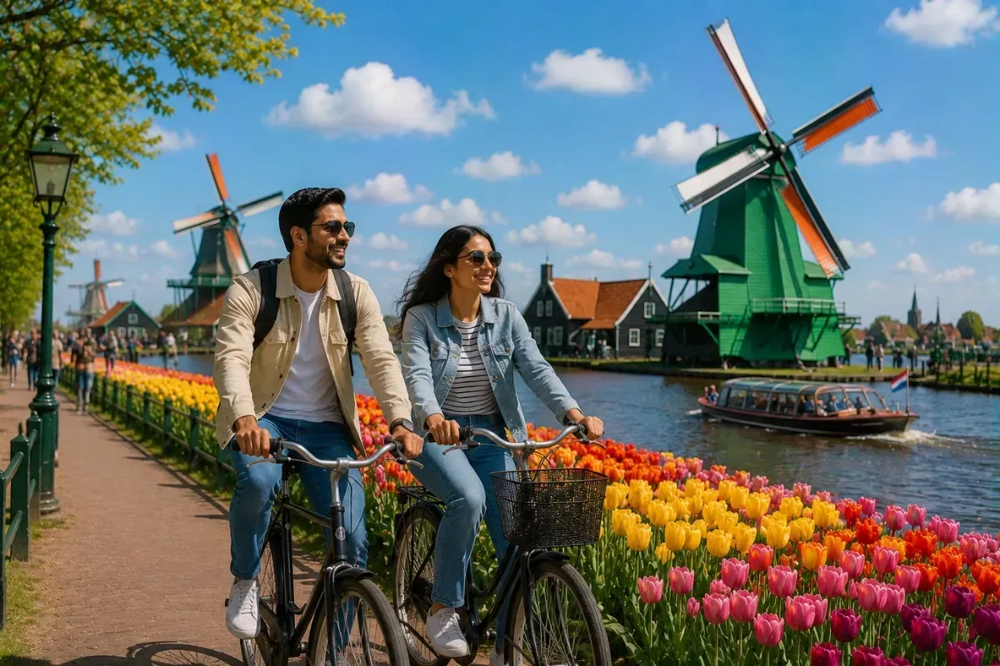
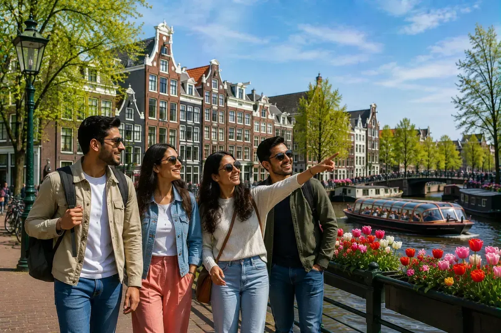

Netherlands Visa Assistance
Tourist, business, and visitor visa guidance for Indian passport holders — document verification, A4 bank review, and VFS submission support.
Netherlands Visa Categories
Choose the visa type matching your travel purpose

⚡ PopularNetherlands Tourist Visa
Sightseeing & Holidays • 15 to 20 working days • Complete File Prep
Netherlands Business Visa
Corporate Meetings & Trade Events • Host Invitation & Letterhead Review

👨👩👧👦 Visiting RelativesNetherlands Visitor Visa
Visiting Friends & Family • Host Sponsorship & Resident Status Review
Frequently Asked Questions
Quick answers to key questions about processing, fees, and requirements
How long does Netherlands Visa processing take for Indian citizens?
Netherlands Schengen Visa processing typically takes 15 to 20 working days after document submission and biometric enrollment at the VFS Global Visa Application Centre. Applying 4 to 6 weeks before your scheduled travel is highly recommended.
What is the fee for Netherlands Visa assistance?
The total fee structure for an adult applicant is ₹ 16,790. This includes the Short-term Embassy Visa Fee of € 90 (approx. ₹ 9,900), Mandatory VFS Appointment Service Charge of ₹ 1,890, and Trippovention Consultation & File Preparation charges of ₹ 5,000. For children aged 6–12 years, the total fee is ₹ 11,890.
What are the primary documents required for a Netherlands Visa?
Core requirements include a completed & signed visa application form, original personal covering letter with day-by-day travel plan, confirmed round-trip flight reservations, hotel/accommodation proof across the Netherlands & Schengen, travel medical insurance with min. €30,000 / $50,000 coverage, valid passport (min. 6 months validity & 2 blank pages) with front/back photocopies, recent 35–40 mm white-background photos, last 6 months stamped bank statements, and last 3 years ITR.
Is biometric appointment mandatory at VFS for Netherlands visa?
Yes, all applicants aged 12 and above must visit the VFS Global Visa Application Centre in person to submit biometric data (fingerprints and digital photograph), unless biometrics were previously enrolled for a Schengen visa within the past 59 months.
Can I visit other Schengen countries on a Netherlands Visa?
Yes, a Netherlands Schengen Visa permits travel across all 29 Schengen member countries. However, the Netherlands must be your main destination where you spend the highest number of days or your primary port of entry into the Schengen Area.
What travel insurance is required for a Netherlands Schengen Visa?
Travel health insurance is mandatory with minimum coverage of € 30,000 (or $ 50,000 / CHF 50,000). It must cover emergency hospitalization, urgent medical attention, and repatriation for medical reasons, valid across all Schengen states for your complete itinerary.
What are the bank statement requirements for Netherlands visa approval?
Applicants must provide original personal bank statements for the last 6 months bearing the bank branch's official stamp and authorized signature. The account should demonstrate consistent financial stability and sufficient funds to support the trip.
What are the differences between Netherlands Tourist, Business, and Visitor visas?
A Tourist Visa is intended for vacations, sightseeing, and leisure. A Business Visa requires an official corporate invitation from a Dutch company, host business registration, and Indian employer NOC. A Visitor Visa is for visiting relatives or friends residing legally in the Netherlands and requires an official host sponsorship form (Bewijs van garantstelling), proof of legal status, host address, and financial documents.
How early before my travel date can I apply for a Netherlands Visa?
You can apply up to 6 months before your intended date of travel. It is strongly advised to apply at least 30 to 45 days in advance to account for seasonal appointment demand and embassy processing periods.
Does Trippovention provide end-to-end Netherlands visa consultation and doorstep support?
Yes, Trippovention provides complete end-to-end file preparation, cover letter drafting, financial compliance review, VFS appointment scheduling, and doorstep physical document pickup and drop-off assistance across major Indian cities.
Ready to Start Your Netherlands Visa?
Speak with our visa team or request assistance online